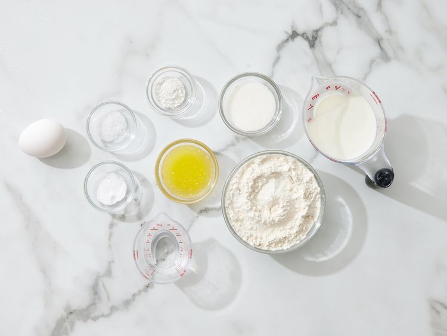

Fluffy Pancakes
Fluffy Pancakes Recipe
These panckaes are fluffy, buttery, and syrupy. To make them even better add some berries and/or cream!
This recipe has a prep time of 10 minutes, cook time of 10 minutes, and an expectation for a 5 minute buffer time.
This recipe serves 4 (8 total pancakes).
Ingredients:
- 3/4 cup milk
- 2 tablespoons white vinegar
- 1 cup all-purpose flour
- 2 tablespoons white sugar
- 1 teaspoon baking powder
- 1/2 teaspoon baking soda
- 1 egg
- 2 tablespoons butter, melted
- cooking spray
Steps:
- Gather all ingredients

- Combine milk and vinegar in a medium bowl and set aside for 5 minutes to make sour milk.
- Combine flour, sugar, baking powder, baking soda, and salt in a large mixing bowl.

- Whisk egg and butter into soured milk
- Pour flour mixture into milk mixture and whisk until lumps are gone
- Heat a large skillet over medium heat, and coat it with cooking spray. Pour 1/4 cupfuls of batter onto the skillet, and cook until bubbles form and the edges are dry, about 2 to 3 minutes.
- Flip with a spatula, and cook until browned on the other side. Repeat with remaining batter.
- Top with your favorite toppings. Enjoy!
Home